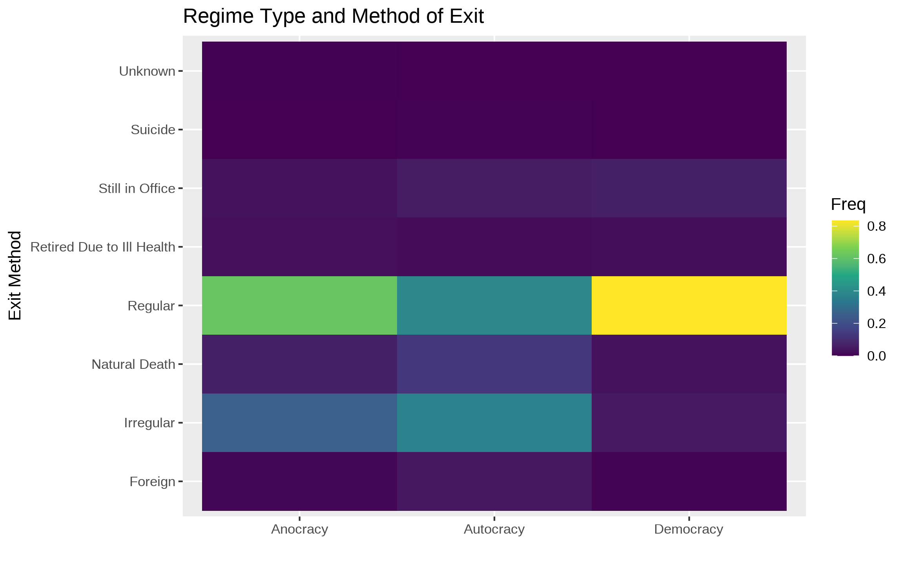

class: inverse
class: inverse background-image: url(“img/PicAnimNew.gif”)
class: inverse
There are at least two core problems:
1. Systematic data are lacking as are systematic evaluations.
–

class: inverse
Probability of survival given time in office can be written as:
\[ Pr(Survive|t) = \frac{\textrm{Number Surviving at t+1}}{\textrm{Risk set at t}} \]
Basically, the number of failures only considering those that have survived number of years.
Archigos %<>% mutate(tenure = as.duration(eindate %--% eoutdate)) %>% # Create duration for each spell
mutate(tenureY = tenure / dyears(1)) # Measure duration in years.
Archigos %>% head() %>% kable(., format="html") %>% kable_styling() %>% scroll_box(width = "800px", height = "400px")class: right background-image: url(“img/TenureBack.svg”) background-size: contain
ArchB %>% filter(tenureY < 5) %>% ggplot(., aes(x=tenureY)) + geom_histogram(fill = "magenta") + theme_minimal(base_size = 24) + labs(title="Tenure under Five Years", x = "Tenure in Years")class: inverse

Polity
class: inverse
ggplot(PolArch, aes(time = tenureY, status = Censored, color = factor(GovType))) + geom_km() + labs(title="Survival by Government Type", color="Type") + theme_minimal(base_size = 24)count: false
.panel1-Entry-auto[
Archigos %>%
tabyl(entry) #<<]
.panel2-Entry-auto[
entry n percent
Foreign Imposition 40 0.0117336462
Irregular 571 0.1674977999
Regular 2796 0.8201818715
Unknown 2 0.0005866823]
count: false
.panel1-Entry-auto[
Archigos %>%
tabyl(entry) %>%
ggplot(., aes(x=fct_reorder(entry, n), y=n, fill=entry)) +
geom_col() #<<]
.panel2-Entry-auto[ ]
count: false
.panel1-Entry-auto[
Archigos %>%
tabyl(entry) %>%
ggplot(., aes(x=fct_reorder(entry, n), y=n, fill=entry)) +
geom_col() +
theme_minimal(base_size = 24) +
coord_flip() #<<]
.panel2-Entry-auto[ ]
count: false
.panel1-Entry-auto[
Archigos %>%
tabyl(entry) %>%
ggplot(., aes(x=fct_reorder(entry, n), y=n, fill=entry)) +
geom_col() +
theme_minimal(base_size = 24) +
coord_flip() +
scale_fill_viridis_d() +
guides(fill=FALSE) #<<]
.panel2-Entry-auto[ ]
count: false
.panel1-TableEnt-user[
PolArch %>% #<<
mutate(Twentieth.Century = (BYear > 1899)) %>% #<<
tabyl(entry, Twentieth.Century) #<<]
.panel2-TableEnt-user[
entry FALSE TRUE
Foreign Imposition 6 34
Irregular 70 501
Regular 310 2486
Unknown 0 2]

class: middle, inverse, center
But…

Archigos %>% ggplot(aes(x=eindate, color=gender)) + geom_density() + theme_ipsum_rc()class: bottom background-image: url(“img/PicAnimNew.gif”) background-position: 65% 8%